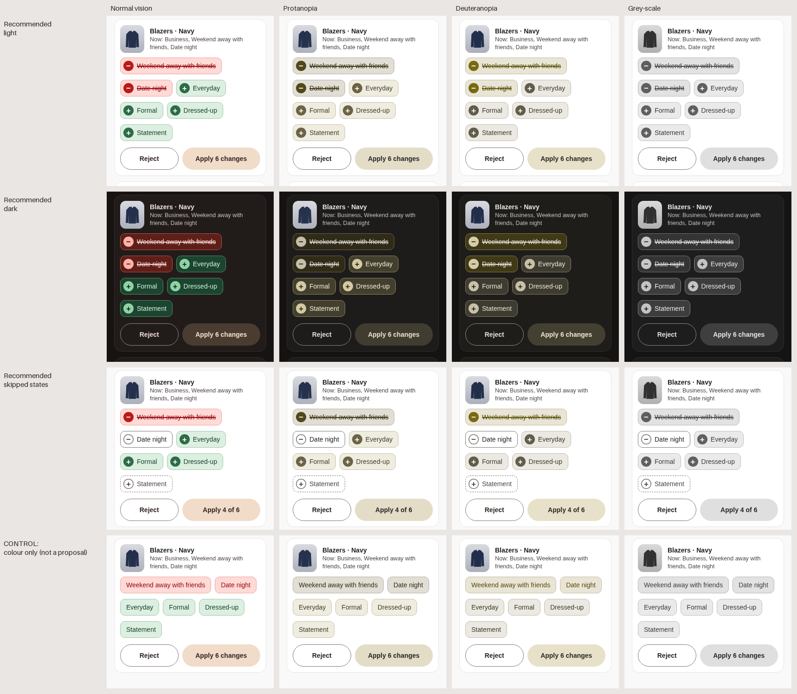

Manu (round 2): “el A va en la dirección correcta. […] no queda muy claro cuál es la etiqueta que se quita. La que se añade queda muy claro con ese verde. ¿Quizás se puede hacer lo mismo con el icono ‘−’ y en rojo para las que se quitan?” Direction A “Pick, then decide” is decided; this round only perfects how a card says adds, removes, keeps and swaps. Everything else (save per garment, list shrinks, Undo, “Reviewed · N”, completion) is round 2 as approved. Rounds 1 and 2: ../review-redesign/, ../review-redesign-2/.
Recommendation: Signed chips, sorted. Yes to Manu’s idea, with three fixes that make it survive without colour.
① Every change chip has a filled sign circle: green + for added, red − for removed, and removed tags are struck through. ② Fixed reading order: category swap, then removals, then additions, so red never interleaves with green. ③ One rule for skipping: filled sign = will happen, hollow sign = skipped by you. A skipped add becomes a dashed ghost (won’t be there); a kept removal becomes a plain chip (stays). Unchanged tags are never chips: they live in the “Now:” line.
Card buttons: Reject = keep the garment exactly as it is. Apply N changes / Apply n of N = apply what is filled. All skipped → one Keep as is. Alternative, also fully built: Labelled rows (“− Removes” / “+ Adds” headers), clearer in words but taller and redundant on single-add cards.
Color.kt): error #BA1A1A / errorContainer #FFDAD6 / onErrorContainer #93000A for removals, round 1’s success green #2E6B47 / #DCEFE1 / #17432A for additions. Dark = round 1’s derived dark proposal plus a derived add/remove pair (Robia ships light only). Fonts render with the fallback stack (wider than Inter/Roboto, so what fits here fits on device).Same garment in all five: a restored-defaults proposal with 4 adds, 2 removes and 1 unchanged tag (Business).
Red chip with “−” and struck-through text next to the green “+” chips, in the order the model returns them.
Answers the feedback directly and stays as compact as round 2. Problems when taken literally: red and green chips interleave in one wrapped flow, so the eye has to sort them; a bare 14 px “−” is a thin dash that disappears next to a strike line; round 2 used strike-through for “left out”, which now collides with “will be removed”. All three are fixable without adding rows → this is the base of the recommendation.
Two sections with a leading sign + word, chips under each; swap gets its own “Changes” row.
The clearest for colour-blind users and screen readers (the word is there), and the rows sort red from green by themselves. Costs: +2 label lines per card (≈40 dp on the restore case), labels are redundant on the 80 % single-add cards, and a kept removal still sits under “Removes”, so the label can contradict the chip. Built in full as the alternative.
One row per tag with a +/− gutter and a switch; unchanged tags dimmed in place.
Most explicit and very accessible (gutter sign + row + switch), and shows the full result. But it is a code-review metaphor, one 44–48 dp row per tag makes the restore card ~2× taller (7 rows here, more with many occasions), and dimmed kept rows look disabled rather than “unchanged”. Too heavy for 100+ garments.
“Now” strip with removed tags crossed out in place, “After” strip with added tags appearing in place.
Reads like a story (now → after), but every unchanged tag is drawn twice, long DE strings double the wrapping, and it is unclear which strip is tappable: tap the crossed “Weekend” on top to keep it, or tap something below? It is round 1’s before/after boxes again, which Manu moved away from.
A single strip of the tags the garment will have: unchanged tags plain, removed ones struck in place, added ones green.
Merges “Now:” and the changes, no duplication, nice for small sets. But plain unchanged chips sit between tappable change chips and look tappable too (they are not), the strip grows with tags that do not change, and red/green interleave again. Its good part — show unchanged tags only as context — stays as the “Now:” line.
Every chip state, light and dark. The text column states the meaning without referring to colour.
| +Business | Will be added. Filled + circle, green tint, plain text. Tap → left out. |
| +Business | Left out by you. Hollow +, dashed outline, muted text: it will not be there. Tap → add again. |
| −Weekend away with friends | Will be removed. Filled − circle, red tint, |
| −Weekend away with friends | Kept by you. Hollow −, solid outline, normal text: it stays like any tag. Tap → remove again. |
| −Tops→+Knitwear | Category swap. One tap target. Tap → stays Tops. |
| −Tops→+Knitwear | Swap skipped. Tops stays (plain), Knitwear ghost, dashed frame. |
| Now: Business | Unchanged tags. Text only in the “Now:” line, never a chip: not a proposal, not tappable. |
| +Business | Will be added. Filled + circle, green tint, plain text. Tap → left out. |
| +Business | Left out by you. Hollow +, dashed outline, muted text: it will not be there. Tap → add again. |
| −Weekend away with friends | Will be removed. Filled − circle, red tint, |
| −Weekend away with friends | Kept by you. Hollow −, solid outline, normal text: it stays like any tag. Tap → remove again. |
| −Tops→+Knitwear | Category swap. One tap target. Tap → stays Tops. |
| −Tops→+Knitwear | Swap skipped. Tops stays (plain), Knitwear ghost, dashed frame. |
| Now: Business | Unchanged tags. Text only in the “Now:” line, never a chip: not a proposal, not tappable. |
| Chip kind | Default | Tap once | Tap again | Button effect |
|---|---|---|---|---|
| + add | filled +, green tint | left out: hollow +, dashed ghost, muted | back to add | Apply count −1 |
| − remove | filled −, red tint, struck | kept: hollow −, plain solid chip, no strike | back to remove | Apply count −1 |
| − old → + new (category) | framed pair, both filled | stays old: old plain, new ghost, dashed frame | back to swap | Apply count −1 |
| unchanged tag | Text in “Now:” only. Not a chip, not tappable. | |||
Feedback is immediate (150 ms cross-fade of fill + sign, no movement, light haptic tick). Chips never re-sort when toggled. Nothing is saved until the card footer. Footer: all on → Apply N changes (plural); some skipped → Apply n of N; all skipped → one button Keep as is + “All changes skipped”. Reject is always “keep this garment’s tags exactly as they are”, whatever the chips show. Why “Apply 4 of 6” and not “Apply 3 · keep 1 · leave out 1”: with mixed skips the three-part label does not fit in German (“3 übernehmen · 1 behalten · 1 weglassen”); the chips already show which ones, the button only needs the count.
Screenshots of the built phones, transformed with Machado et al. (2009) full-severity matrices in linear RGB, plus luminance only. Bottom row is a control, not a proposal: the same chips with colour as the only cue (no sign, no strike). In the control the removed and added chips merge under protanopia / deuteranopia / grey-scale; in the recommendation they stay distinct by the − / + shape, the strike line and the order.

WCAG 2.x ratios computed from the tokens by build.py. Requirement: ≥ 4.5:1 for both colours against the card, in both themes.
| Pair | Light (card #FFFFFF) | Dark (card #211C1A) |
|---|---|---|
| + sign / label colour vs card | 6.3:1 #2e6b47 on #ffffff | 9.7:1 #8fd3a5 on #211c1a |
| − sign / label colour vs card | 6.5:1 #ba1a1a on #ffffff | 9.9:1 #ffb4ab on #211c1a |
| Add chip text vs its fill | 9.3:1 #17432a on #dcefe1 | 8.9:1 #c6f2d3 on #1d4430 |
| Remove chip text vs its fill | 7.2:1 #93000a on #ffdad6 | 9.6:1 #ffdad6 on #5e1f19 |
| + glyph vs filled circle | 6.3:1 #ffffff on #2e6b47 | 9.2:1 #0b2615 on #8fd3a5 |
| − glyph vs filled circle | 6.5:1 #ffffff on #ba1a1a | 8.2:1 #5c0a05 on #ffb4ab |
| Kept / ghost chip text vs card | 9.4:1 #4f4442 on #ffffff | 9.4:1 #cdbfbb on #211c1a |
| Recommended · Signed chips | Alternative · Labelled rows | |
|---|---|---|
| Restore card height (4 + 2) | Good 3 chip lines | OK +2 label lines (≈ +40 dp) |
| Single-add card | Good same as round 2 | OK label “+ Adds” above one chip is redundant |
| Without colour | Good sign shape + strike + reading order | Good words + strike + grouping |
| Skipped states | Good hollow sign, one rule for all chips | OK kept chip sits under “Removes”; needs “1/2” count |
| Swap | Good one framed unit | Good own “Changes” row |
| Long DE strings | Good chip up to card width | Good same + longer labels (“Fügt hinzu”) |
| Build (Compose) | Good FilterChip with custom leading icon; one FlowRow | Good same chips + section headers |
Tap a change to skip it, then apply or reject. Reviewed garments leave the list.
Tap a change to skip it, then apply or reject. Reviewed garments leave the list.
Tap a change to skip it, then apply or reject. Reviewed garments leave the list.
Tap a change to skip it, then apply or reject. Reviewed garments leave the list.
Plurals are Android quantity strings (_one / _other). Content descriptions make each chip a switch for TalkBack.
| key | EN | ES | DE |
|---|---|---|---|
| review_reject | Reject | Rechazar | Ablehnen |
| review_apply_n_one | Apply 1 change | Aplicar 1 cambio | 1 Änderung übernehmen |
| review_apply_n_other | Apply %1$d changes | Aplicar %1$d cambios | %1$d Änderungen übernehmen |
| review_apply_n_of_m | Apply %1$d of %2$d | Aplicar %1$d de %2$d | %1$d von %2$d übernehmen |
| review_keep_as_is | Keep as is | Dejar como está | Unverändert lassen |
| review_all_skipped | All changes skipped: the garment stays as it is. | Todos los cambios saltados: la prenda se queda como está. | Alle Änderungen ausgelassen: Das Kleidungsstück bleibt unverändert. |
| review_none_left_occ | After this, the garment has no occasions. | Después de esto, la prenda no tendrá ocasiones. | Danach hat das Kleidungsstück keine Anlässe mehr. |
| review_apply_remaining | Apply all remaining (%1$d) | Aplicar las %1$d restantes | Alle restlichen %1$d übernehmen |
| review_bulk_title | Apply the remaining %1$d? | ¿Aplicar las %1$d restantes? | Die restlichen %1$d übernehmen? |
| review_bulk_body | Robia will add %1$d tags and remove %2$d on %3$d garments. You can undo it right after. | Robia añadirá %1$d etiquetas y quitará %2$d en %3$d prendas. Podrás deshacerlo justo después. | Robia fügt bei %3$d Kleidungsstücken %1$d Tags hinzu und entfernt %2$d. Du kannst das gleich danach rückgängig machen. |
| review_snack_applied_one | 1 change applied | 1 cambio aplicado | 1 Änderung übernommen |
| review_snack_applied_other | %1$d changes applied | %1$d cambios aplicados | %1$d Änderungen übernommen |
| review_snack_kept | Kept as it was | Se queda como estaba | Bleibt unverändert |
| review_hint_changes | Tap a change to skip it, then apply or reject. Reviewed garments leave the list. | Toca un cambio para saltarlo y luego aplica o rechaza. Las prendas revisadas salen de la lista. | Tippe auf eine Änderung, um sie auszulassen, dann übernimm oder lehne ab. Geprüfte Kleidungsstücke verschwinden aus der Liste. |
| review_cd_add | Add %1$s. Double-tap to leave it out. | Añadir %1$s. Toca dos veces para dejarla fuera. | %1$s hinzufügen. Doppeltippen, um es wegzulassen. |
| review_cd_add_off | %1$s will not be added. Double-tap to add it. | %1$s no se añadirá. Toca dos veces para añadirla. | %1$s wird nicht hinzugefügt. Doppeltippen, um es hinzuzufügen. |
| review_cd_remove | Remove %1$s. Double-tap to keep it. | Quitar %1$s. Toca dos veces para conservarla. | %1$s entfernen. Doppeltippen, um es zu behalten. |
| review_cd_remove_off | %1$s stays. Double-tap to remove it. | %1$s se queda. Toca dos veces para quitarla. | %1$s bleibt. Doppeltippen, um es zu entfernen. |
| review_cd_swap | %1$s instead of %2$s. Double-tap to keep %2$s. | %1$s en lugar de %2$s. Toca dos veces para conservar %2$s. | %1$s statt %2$s. Doppeltippen, um %2$s zu behalten. |
| review_cd_swap_off | Stays %2$s. Double-tap to change to %1$s. | Se queda en %2$s. Toca dos veces para cambiar a %1$s. | Bleibt %2$s. Doppeltippen, um zu %1$s zu wechseln. |
Built by build.py (imports round 2’s, which imports round 1’s). PNGs: one per phone (<page>-NN-<state>-light|dark.png), page slices, variants-*.png, cvd-strip.png.